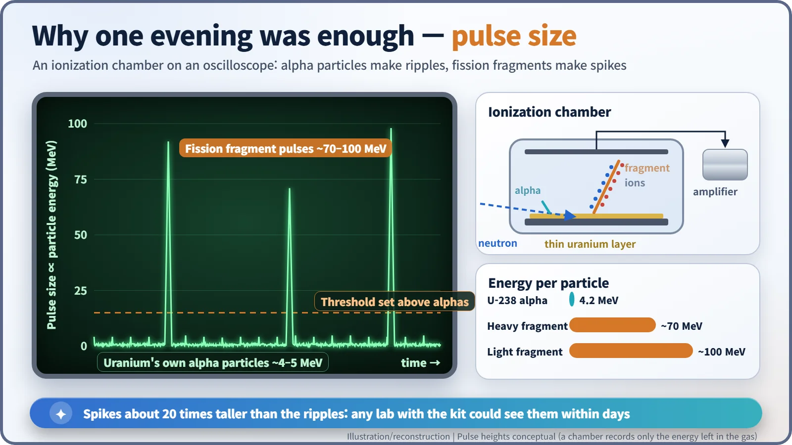
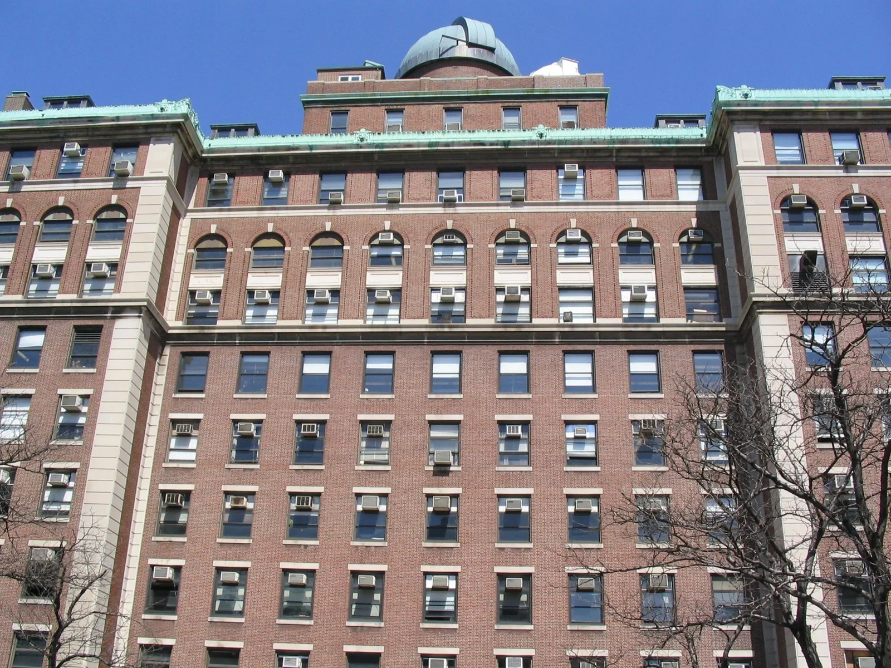
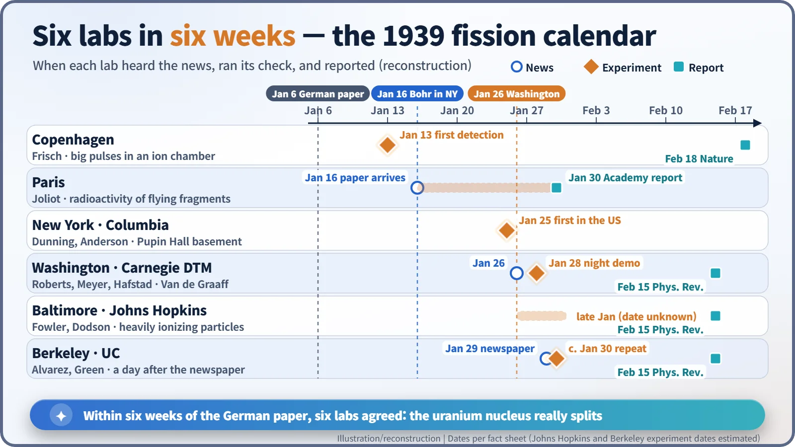

Nuclear History · 065
One Line in a Lab Notebook — How Labs Around the World Confirmed Nuclear Fission Within Weeks (1939)
Within weeks of the German barium paper, six laboratories on both sides of the Atlantic had seen uranium split for themselves.
Hahn and Strassmann's chemistry said uranium could split, but a physical demonstration was needed. Between 13 January and the end of January 1939, laboratories in Copenhagen, New York, Washington, Baltimore, Berkeley and Paris each saw the evidence for themselves, mostly as huge pulses in an ionization chamber. Within weeks, replication had turned a surprising claim into an accepted fact.
One line in a notebook
"Believe we have observed new phenomenon of far reaching consequences."
Late on the evening of Wednesday 25 January 1939, in the basement of Pupin Hall at Columbia University in New York, the physicist John R. Dunning (1907–1975) stopped work at about 11 p.m. and wrote that sentence in his notebook. He had just seen uranium nuclei split, the first time anyone in the United States had done so. Within days, laboratories on both sides of the Atlantic were racing to do the same. [1]
A paper is not yet a fact
The starting point was a paper by Otto Hahn and Fritz Strassmann, published in the German journal Naturwissenschaften on 6 January 1939. They had fired neutrons at uranium and found barium, a much lighter element, among the products. But that was chemistry, and chemistry was indirect evidence. Someone had to show physically that the nucleus really breaks in two and that big fragments fly apart.
The first to do so was Otto Robert Frisch (1904–1979) in Copenhagen, on 13 January. Niels Bohr carried the news to New York on 16 January, and once it was made public at the Washington Conference on Theoretical Physics on 26 January, it spread like wildfire. [4] [2]
A spike on the oscilloscope
Why could the result be checked so quickly? Because the experiment was simple. The key tool was an ionization chamber: a gas-filled box with a voltage across it. A fast charged particle crossing the gas knocks electrons off atoms; the freed charge drifts to the electrodes and produces a brief electrical pulse. The more energy the particle leaves behind, the bigger the pulse.
Uranium is naturally radioactive and emits alpha particles of about 4–5 MeV, so a chamber containing uranium always shows a low ripple of small pulses. When a nucleus splits, however, each fragment carries roughly 70–100 MeV. On the screen that is a spike about twenty times taller than the ripple. Set the amplifier's threshold above the alpha pulses and you count only the spikes. Any laboratory with a chamber, an amplifier and a neutron source could try it.

Wednesday night in Pupin Hall
The Columbia experiment began with a suggestion from Enrico Fermi: coat an electrode of an ionization chamber with uranium and test it at the cyclotron. But Fermi was leaving for the Washington conference the next day, so the graduate student Herbert L. Anderson (1914–1988) carried on with Dunning.
According to Dunning's account, he fetched a radon–beryllium neutron source from the thirteenth floor and set it beside the chamber. Large pulses appeared on the oscilloscope at about one a minute. At first he suspected a bad electrical contact. When a second device was placed next to the chamber, the rate rose to about seven. The group's results were later published as "The Fission of Uranium" in Physical Review. [1] [5]

From the conference hall to the lab
In Washington the response was even more direct. After hearing the news at the conference, Richard B. Roberts (1910–1980), Lawrence R. Hafstad (1904–1993) and R. C. Meyer of the Carnegie Institution's Department of Terrestrial Magnetism (DTM) assembled their equipment, and on the night of Saturday 28 January they observed fission using neutrons from their Van de Graaff accelerator. Carnegie's own history records the demonstration, and Bohr and Fermi, in town for the conference, came to watch. [3] At Johns Hopkins University in Baltimore, R. D. Fowler and R. W. Dodson also saw the effect at the end of January, although the exact date of their experiment has not been confirmed.
The physicist who left the barber's chair
In Berkeley, a newspaper set things off. On Sunday 29 January, Luis W. Alvarez (1911–1988) was sitting in the campus barbershop reading the San Francisco Chronicle when he spotted a short wire report: German chemists had split uranium with neutrons. He stopped the barber mid-cut and ran to the Radiation Laboratory. To his student Philip Abelson, who had been hunting for elements heavier than uranium, he said, as he later recalled: "Phil, what you are looking for are not transuranium elements, but they are elements in the middle of the periodic table." [1] Alvarez's group repeated the experiment within about a day. According to a story often told, J. Robert Oppenheimer first declared fission "impossible", then accepted it as soon as he saw the result. [7]
Paris takes another road
In Paris, the issue of Naturwissenschaften carrying the Hahn–Strassmann paper arrived in Frédéric Joliot's laboratory in the morning post on 16 January. His colleague Lew Kowarski later recalled: "Immediately, everything was understood." Joliot chose a different method from the pulse counters. He let fragments recoiling from a thin layer of uranium fly a few millimetres and embed themselves in a facing surface, then measured the radioactivity they left there: proof that pieces of the nucleus had really flown out. He reported to the Paris Academy of Sciences on 30 January. Kowarski called it "one of the most elegant experiments I know of in the history of science". Remarkably, the Paris team did not know that Frisch had seen the same thing two weeks earlier. [6] [8]

Replication makes a fact
Different countries, different instruments and different methods gave the same answer: the uranium nucleus really does split, and it releases a great deal of energy when it does. Several of the papers reported that thorium splits too. By February the news had travelled so far that a New York Times editorial discussed the possibility of harnessing nuclear energy. [6]
In science, one laboratory's discovery becomes a fact when other laboratories can reproduce it, and January 1939 showed that process almost live. It also raised the next question at once: when a nucleus splits, does it release neutrons too? If it does, a chain reaction becomes possible.